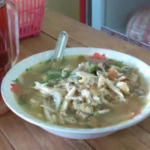
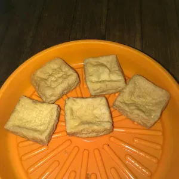

Menghadirkan racikan autentik Soto Kudus dengan irisan daging sapi pilihan, kuah kaldu rempah bening gurih, dan taburan bawang putih goreng renyah melimpah yang siap menghangatkan harimu.
100%
Daging Sapi Asli
06.00-21.00
Buka Sampai Malam
4.9 ★
Kepuasan Rasa
Mangkok Khas Kudus dengan Bawang Putih Goreng Melimpah
06.00 – 21.00 WIB • Cocok Sarapan s/d Makan Malam
Warung Soto Kudus Pak Yono menyajikan kenikmatan soto berkarakter khas: kuah kaldu daging sapi murni yang dimasak perlahan bersama rempah-rempah tradisional Nusantara. Rasanya gurih ringan, segar di tenggorokan, dan tidak membuat begah di perut.
Daging Sapi Pilihan Empuk: Dipotong pas dan lembut saat disantap bersama nasi hangat.
Aroma Bawang Putih Goreng Khas: Ditabur melimpah di atas mangkok untuk sensasi renyah dan harum.
Racikan Pas di Meja: Nikmat ditambah perasan jeruk nipis segar, sambal rawit merah, dan kecap manis lokal.


"Soto Kudus Pak Yono memang rasanya maknyuss... recommended pokoknya. Tempatnya juga bersih, pelayanannya ramah!"
— Bapake Aisifaqila (Google Review)
"Stopped by to try the soto Kudus. Very happy with the taste and the service. Definitely happy to recommend!"
— Ernest Hocking (Google Review)
"Delicious food! Kuah beningnya seger banget, porsi pas, harga terjangkau. Cocok sarapan & makan malam."
— Ahmad Maqih (Google Review)
Terletak strategis di jalur utama kota Jepara, sangat cocok disinggahi untuk sarapan santai, makan siang, maupun makan malam bersama rekan kerja dan keluarga.
Jalan Ki Mangunsarkoro, RT.1/RW.7, Panggang, Jepara, Jawa Tengah
Setiap Hari: 06.00 – 21.00 WIB (Makan Pagi s/d Malam)